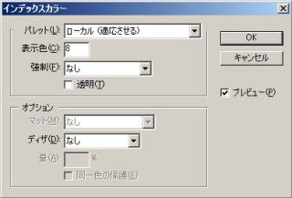
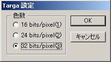
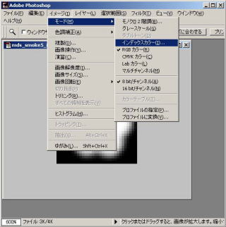

テクスチャフォーマットとフォーマット変換方法
| １ | イメージメニュー／モード／インデックスカラーを選択。 |
| ２ | インデックスダイアログの |
| パレットローカル（適応させる） | |
| 表示色 ８色 | |
| 強制 なし | |
| 透明 チェックなし | |
| ディザ なし に設定。 | |
| ※画像によって、パレットローカル（知覚的）、パレットローカル（選択的）の方がきれいな場合もある。 | |
| ディザのパターン、誤差拡散、ノイズも画像によって、使用した方がよい場合もある。 | |
| ３ | イメージメニュー／モード／ＲＧＢモードに設定。 |
| ４ | フィルタ／NITENDO NITRO−system／NNS_ColorDepthを選択します。 |
| NNS_ColorDepthダイアログの５bitを選択します。 | |
| アルファチャンネルが５bit（３２色）に変換されます。 | |
| ５ | ファイル／保存を選択。 |
| tga形式（３２bit）で保存します。 |
|  |
|  |
|  |
| カラーチャンネルの色数を３bit（８色）に減色し、Photoshopでtga保存する。 |
| ■ 一例として、a5i3に変換するためのテクスチャ作成法を紹介します |